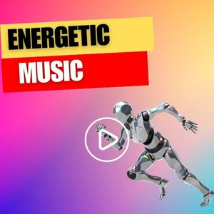

豪拜兒|只想聽音樂，你不可不知的Youtube背景音樂頻道！

音樂在我們生活中的重要性不言而喻。它不僅是一種聲音，更像是一種情感的表達方式。當我們感到快樂時，會想要跳舞，唱歌；當我們感到難過時，會需要一些音樂來安慰自己。音樂也是一個記憶的橋樑，一首熟悉的歌曲可以把我們帶回到過去的時光，讓我們再次感受到那份溫暖。此外，音樂也可以啟發創造力，激發想像力，讓我們更有靈感。不管是在工作、學習還是放鬆的時候，音樂都能夠成為我們的好伴侶，它帶來美好的心情和情感。音樂，是我們生活中不可或缺的一部分，它為我們的生活增添了更多的色彩和節奏。
今天小編要分享的是一個專注於背景音樂的YouTube網站，它提供了各式各樣的背景音樂，包括Lofi、電影配樂、爵士樂、莫扎特音樂、冥想音樂、鋼琴曲等等。
話不多說，讓我們一起來欣賞一些精選音樂吧。由於 YouTube 音樂版權的原因，以下將附上連結，請大家點擊連結跳轉到 YouTube 欣賞吧！
鋼琴曲
這兩首都是鋼琴曲，Til Death Parts Us屬於憂傷的旋律，Before I Go聽起來相當勵志：

卡農
想必大家都很熟悉，這是管弦樂版本：

莫札特音樂
不知大家是否聽過莫札特效應，所謂的莫扎特效應是指，聽莫扎特音樂有助於提高專注力和效率，讓人更容易進入沉浸式的學習或工作狀態。這種效應已經被許多研究所證實，因此莫扎特音樂常常被用來作為學習、工作或放鬆的背景音樂：
電影配樂合輯
有多種類型的電影配樂：

運動音樂的合輯
聽起來很有活力的音樂，很適合運動健身的時候聆聽：

以上的分享，不知大家最喜歡什麼風格的音樂呢？小編本最喜歡的是鋼琴曲，大家也可以到該Youtube頻道中欣賞其他音樂，希望大家都可以找到觸動內心深處的好音樂。